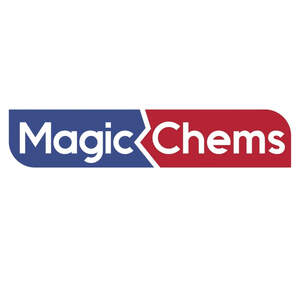

Trade Mark Journal No.2026/012 20 March 2026
UK00004339415 11 February 2026 (1,35)

- Class 1
- Chemicals used in industry, science, photography, agriculture, horticulture and forestry; unprocessed artificial resins; unprocessed plastics; manures; fire extinguishing compositions; tempering and soldering preparations; chemical substances for preserving foodstuffs; tanning substances; adhesives used in industry; all purpose industrial glue; cement used to bond polyvinyl chloride (PVC) pipe and pipe fittings; adhesives, other than for stationery or household purposes; construction and industrial adhesives; epoxy glue for general bonding and repair purposes; super glue for general bonding and repair purposes; polyurethane glue for general bonding and repair purposes; wood glue for general bonding and repairing, and for construction and industrial purposes; contact cements; adhesives for bonding glass or mirrors; adhesives for affixing wallpaper borders; adhesives for affixing wall tiles; adhesives for installation of drywall panels; laminate adhesives; aerosol adhesives; canister adhesives; flooring adhesives; carpet adhesives; wallpaper adhesives; adhesives for paperhanging; adhesives for use on plastics, textiles, metal, ceramic, glass and wood; tiling grout; glue stick for industrial purposes; epoxy resins; adhesive compounds with a base of epoxy resins; pvc pipe weld; flexible fillers; wood fillers; expanding foam fillers; binders for use in the formulation of caulks; solvents; solvents for cleaning bricks, mortar or stone; damp proofing preparations or compositions (other than paint); chemical agents and solvents for hardening wood; chemical additives for lubricants, lubricating oils and greases; chemicals for use in the oil and gas drilling industry; chemical additives for oil and gas well drilling fluids and cements.
- Class 35
- Advertising, marketing and promotional services; business management, organisation and administration; advertising and marketing services for social networking; event marketing; internet marketing; dissemination of advertisements via the Internet; public relations; online digital marketing services; market research and information services; publication of advertising texts; promoting the goods and services of others via computer and communication networks; online business networking services; office functions; loyalty, incentive and bonus program services; publicity services; television advertising; rental of advertising space; radio advertising; Wholesale and retail services connected with Chemicals used in industry, science, photography, agriculture, horticulture and forestry, unprocessed artificial resins, unprocessed plastics, manures, fire extinguishing compositions, tempering and soldering preparations, chemical substances for preserving foodstuffs, tanning substances, adhesives used in industry, all purpose industrial glue, cement used to bond polyvinyl chloride (PVC) pipe and pipe fittings, adhesives, other than for stationery or household purposes, construction and industrial adhesives, epoxy glue for general bonding and repair purposes, super glue for general bonding and repair purposes, polyurethane glue for general bonding and repair purposes, wood glue for general bonding and repairing, and for construction and industrial purposes, contact cements, adhesives for bonding glass or mirrors, adhesives for affixing wallpaper borders, adhesives for affixing wall tiles, adhesives for installation of drywall panels, laminate adhesives, aerosol adhesives, canister adhesives, flooring adhesives, carpet adhesives, wallpaper adhesives, adhesives for paperhanging, adhesives for use on plastics, textiles, metal, ceramic, glass and wood, tiling grout, glue stick for industrial purposes, epoxy resins, adhesive compounds with a base of epoxy resins, pvc pipe weld, flexible fillers, wood fillers, expanding foam fillers, binders for use in the formulation of caulks, solvents, solvents for cleaning bricks, mortar or stone, damp proofing preparations or compositions (other than paint), chemical agents and solvents for hardening wood, chemical additives for lubricants, lubricating oils and greases, chemicals for use in the oil and gas drilling industry, chemical additives for oil and gas well drilling fluids and cements.
DEMLAR DIŞ TİCARET LİMİTED ŞİRKETİ
Representative: Mahmut Agdas